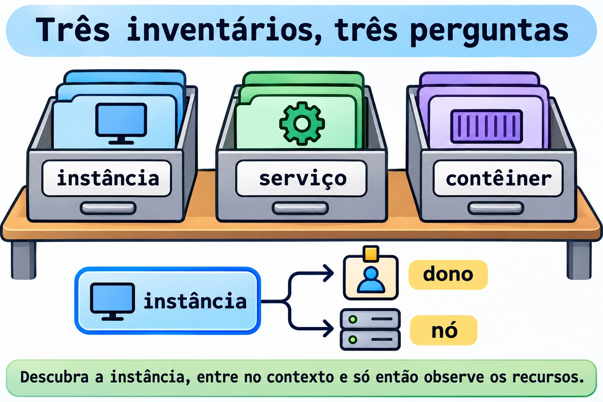

Aula 20.3 · Um módulo por dentro
O coração desta aula: relacionar a Wiki ao seu usuário Unix, serviço, contêiner, dados e logs.
| Ficha | Plano de trabalho |
|---|---|
| Módulo | M20 · NethServer 8 por dentro, aula 3 de 7 |
| Pré-requisitos | Wiki configurada na 20.2 ou snapshot m20a2-wiki |
| Bancada | VM 240 ns8-1; cliente 202 debian-lab; conta student |
| Rede | Uma placa na gestão, endereço estático real, gateway e DNS externos |
Use o guia de bancada M20. Ele concentra os endereços editáveis, os nomes locais e o acesso do navegador. Nenhum comando deste texto foi executado nas VMs durante a elaboração.
Antes de começar
Você precisa da VM 240 com a Wiki configurada, administrador local student e inventário /root/m20-lab/operador.env com MODULE_ID/UUID. Use a base m20a2-wiki, se esse snapshot existir, ou prepare a 20.1 e a 20.2 uma vez. Nenhum estado de outro módulo é necessário.
O acesso pelo nome privado e a comparação do certificado de bootstrap seguem o guia. Não substitua a rota da Wiki por uma URL de IP que seleciona outro site.
1 · Aquecimento
- Root enxerga automaticamente todos os contêineres rootless?
- Um módulo pode usar mais de um contêiner?
- O nome no cartão revela a unidade systemd?
2 · Por que importa
Um processo pode estar saudável no usuário errado, e um log vazio pode pertencer ao filtro errado. A investigação precisa de endereço completo: nó, conta, serviço e instante.
Ponte Windows
Abrir o gerenciador de tarefas em outra sessão não prova que um programa desapareceu. Os contextos rootless também precisam ser escolhidos antes de interpretar uma lista vazia.
3 · Modelo mental

runagent prepara o ambiente da instância. O usuário Unix define privilégios; systemd gerencia o serviço; Podman descreve os contêineres e suas montagens. Uma dessas referências não substitui as outras.
4 · O essencial
| Pergunta | Ferramenta |
|---|---|
| Qual instância? | Painel, UUID e runagent -l |
| Qual conta? | runagent com id |
| Qual execução? | systemctl --user e podman no contexto real |
| Quais dados? | Inspeção das montagens |
| Qual ocorrência? | Journal filtrado e logs do contêiner |
Rocky × Debian
A investigação do módulo acontece como root na VM ns8-1. O navegador e os testes de cliente ficam no acesso do guia; não é necessário instalar Podman na Debian para observar o servidor.
Decida 1
O Podman do root não lista a Wiki. O que você conclui?
A. Todos os dados desapareceram.
B. É preciso consultar o contexto real da instância.
C. Deve reinstalar o cluster imediatamente.
5 · Lab guiado
Passo 1 · Localizar a instância e seu dono
Palpite: A mesma etiqueta pode apontar para outro ID depois de uma restauração?
Na VM 240, entre como student e use sudo -i. Confira o inventário protegido antes de carregá-lo; ele deve pertencer a root e ter modo 0600.
hostname -s
stat -c '%U:%G:%a %n' /root/m20-lab/operador.env
. /root/m20-lab/operador.env
runagent -l
redis-cli --raw HGET cluster/module_uuid "$MODULE_ID"
runagent -m "$MODULE_ID" idSaída esperada: ID, UUID, nó e usuário Unix correspondem à mesma Wiki.
Verifique: Se houve remoção, Move ou restore, reconcilie o mapa antes de continuar.
Passo 2 · Descobrir serviço e contêiner
Palpite: Toda unidade ativa é o serviço web da Wiki?


MODULE_UID=$(runagent -m "$MODULE_ID" id -u)
runagent -m "$MODULE_ID" systemctl --user list-units --type=service --all --no-pager
runagent -m "$MODULE_ID" podman ps --all --format '{{.ID}} {{.Names}} {{.Status}}'Preencha os nomes observados abaixo. Escolha a unidade da aplicação, não apenas a unidade do agente; compare ExecStart e o contêiner antes de fixar a relação.
SERVICE_UNIT='' # unidade .service real observada
CONTAINER_ID='' # ID real do contêiner da Wiki
runagent -m "$MODULE_ID" systemctl --user cat "$SERVICE_UNIT"
runagent -m "$MODULE_ID" systemctl --user show "$SERVICE_UNIT" -p LoadState -p ActiveState -p SubState
runagent -m "$MODULE_ID" podman inspect --format '{{.Name}} {{.State.Status}}' "$CONTAINER_ID"Saída esperada: Você distingue conta, unidade e contêiner observados.
Verifique: Não troque o shell da conta de serviço nem acrescente sudo dentro de runagent.
Passo 3 · Mapear persistência sem editar
Palpite: A camada do contêiner tem o mesmo ciclo de vida de um volume?
runagent -m "$MODULE_ID" podman inspect --format '{{json .Mounts}}' "$CONTAINER_ID"
runagent -m "$MODULE_ID" podman volume ls
runagent -m "$MODULE_ID" podman info --format '{{.Store.GraphRoot}}'
runagent -m "$MODULE_ID" systemctl --user show "$SERVICE_UNIT" -p FragmentPathObserve origem, destino e modo de cada montagem. A listagem não autoriza editar arquivos internos, copiar um banco em execução nem assumir que existe um backup. A restauração funcional será praticada na 20.6.
Saída esperada: Mapa com execução e dados persistentes separados.
Verifique: Compare a documentação do módulo antes de escolher o que preservar.
Passo 4 · Criar uma prova funcional privada
Palpite: Uma resposta HTTP genérica comprova o conteúdo da Wiki?
Abra a Wiki pelo nome privado usando o acesso do guia, confira o certificado de bootstrap e entre como student. Crie a página privada m20:prova com o texto fictício M20 prova inicial. Não altere permissões de outras páginas.
Saia e entre novamente para conferir o conteúdo. Uma consulta anônima pode receber a tela de login; isso não comprova perda da página privada. Não coloque senha ou cookie em comandos do curso.
date --iso-8601=seconds
runagent -m "$MODULE_ID" systemctl --user is-active "$SERVICE_UNIT"Saída esperada: Conteúdo reconhecido em sessão autenticada e serviço observado.
Verifique: Anote instante e página sem capturar credenciais.
Passo 5 · Correlacionar registros
Palpite: Nenhuma linha no log prova que não houve requisição?

date --iso-8601=seconds
journalctl _UID="$MODULE_UID" _SYSTEMD_USER_UNIT="$SERVICE_UNIT" --since '-15 min' --no-pager -n 60
runagent -m "$MODULE_ID" podman logs --since 15m --tail 40 "$CONTAINER_ID"
runagent -m "$MODULE_ID" systemctl --user show "$SERVICE_UNIT" -p ActiveEnterTimestamp -p ExecMainStatus
timeout 10 api-server-logs logs -e module -n "$MODULE_ID"A consulta administrativa usa o UID e a unidade reais, sem depender de um journal separado por usuário. O timeout encerra a consulta contínua de logs; seu código 124, nesse caso, indica prazo atingido.
Nem toda aplicação registra acessos HTTP no canal que você consultou. Compare contexto, intervalo e logs do painel antes de concluir. Não invente uma linha de acesso esperada.
Saída esperada: Registros atribuídos ao nó, dono, serviço e intervalo corretos.
Verifique: Uma ausência de linhas só vale para o filtro consultado.
Passo 6 · Salvar um mapa pequeno
Palpite: Um log integral é sempre a melhor evidência para compartilhar?
m20_salvar_mapa() {
if [ "$(hostname -s)" != ns8-1 ] || [ "$(id -u)" -ne 0 ] || [ -z "$SERVICE_UNIT" ] || [ -z "$CONTAINER_ID" ]; then
printf '%s\n' 'Confira o nó e preencha unidade e contêiner observados.'
return 1
fi
EVID="/root/m20-lab/evidencias-20-3-$(date +%Y%m%d-%H%M%S)"
install -d -m 0700 "$EVID" || return 1
printf 'MODULE_ID=%s\nMODULE_UUID=%s\nMODULE_UID=%s\nSERVICE_UNIT=%s\nCONTAINER_ID=%s\n' "$MODULE_ID" "$MODULE_UUID" "$MODULE_UID" "$SERVICE_UNIT" "$CONTAINER_ID" > "$EVID/mapa.txt"
runagent -m "$MODULE_ID" podman inspect --format '{{json .Mounts}}' "$CONTAINER_ID" > "$EVID/montagens.json"
journalctl _UID="$MODULE_UID" _SYSTEMD_USER_UNIT="$SERVICE_UNIT" --since '-15 min' --no-pager -n 60 > "$EVID/journal.txt"
}
m20_salvar_mapaSaída esperada: Mapa e recorte de evidência em pasta privada do exercício.
Verifique: Revise os registros antes de compartilhar; não exporte credenciais nem o ambiente completo.
Decida 2
Qual conjunto permite encerrar a investigação?
A. Identidade coerente, serviço observado e conteúdo privado reconhecido.
B. Apenas o cartão verde do painel.
C. Apenas um comando que terminou sem imprimir erro.
6 · Quebre e conserte
Quebra 1 · Contexto errado
Sintoma: Uma listagem no contexto de root não mostra a Wiki.
Investigação: Compare com o Podman executado por runagent na instância real.
Causa: São inventários de usuários diferentes.
Conserto: Volte ao MODULE_ID observado, sem migrar permissões.
Prevenção: Registre o dono junto do recurso.
Verifique: A instância e seus contêineres correspondem ao painel.
Quebra 2 · Unidade não descoberta
Sintoma: Uma unidade digitada por memória não é encontrada.
Investigação: Liste as unidades no contexto real e confira ExecStart.
Causa: Nome do cartão e nome de unidade não são a mesma referência.
Conserto: Preencha SERVICE_UNIT com a unidade observada.
Prevenção: Redescubra a unidade depois de mudar a instância.
Verifique: LoadState e identidade correspondem ao objeto escolhido.
Quebra 3 · Intervalo sem ocorrência
Sintoma: Um recorte de journal não mostra o acesso que você acabou de testar.
Investigação: Confira relógio, UID, unidade, intervalo e canal de log.
Causa: O evento pode estar fora do filtro ou não ser registrado nesse canal.
Conserto: Corrija o filtro e compare logs do contêiner e do painel.
Prevenção: Registre o instante antes da prova funcional.
Verifique: A conclusão descreve apenas o que a fonte realmente mostrou.
7 · Armadilhas
- Não transforme a conta de serviço em conta de login.
- Não edite volumes, unidades geradas ou Redis para fabricar uma prova.
- Serviço ativo e conteúdo reconhecido são evidências diferentes.
- A página m20:prova continua privada; tela de login anônima não é perda de dados.
8 · Quiz
- Qual evidência liga o ID do painel ao usuário Unix?
- Por que o Podman do root pode não mostrar o wiki?
- O que diferencia serviço e contêiner?
- Qual filtro evita misturar journals de usuários distintos?
- Por que um mapa de ontem precisa ser reconciliado depois de mover?
9 · Folha de bolso
runagent -l
runagent -m "$MODULE_ID" id
runagent -m "$MODULE_ID" podman ps
journalctl _UID="$MODULE_UID" _SYSTEMD_USER_UNIT="$SERVICE_UNIT" --since '-15 min' --no-pager -n 6010 · Checklist e fechamento
- [ ] ID e UUID ligados ao usuário real.
- [ ] Unidade, contêiner e montagens descobertos.
- [ ] Página privada reconhecida após autenticação.
- [ ] Logs atribuídos ao contexto e intervalo corretos.
- [ ] Evidências revisadas antes de compartilhar.
Reboot de conferência: se reiniciar a VM dedicada, carregue o inventário novamente e redescubra unidade e contêiner. Confira a página; não reutilize um ID de contêiner antigo por memória.
11 · Na vida real
Em uma instância autorizada, desenhe o vínculo entre painel, usuário, serviço, contêiner e dados usando somente consultas. Deixe explícito qual teste confirmou conteúdo e qual apenas descreveu estado.
12 · Aprofundar quando quiser
Gabaritos comentados
Aquecimento: root não reúne automaticamente inventários rootless; uma instância pode ter vários contêineres; a unidade deve ser descoberta.
Decida 1: B. A ausência no contexto de root não significa ausência no contexto da instância.
Decida 2: A. Estado e conteúdo precisam apontar para o mesmo objeto.
Quiz 1: ID e UUID do painel, nó hospedeiro e id executado por runagent precisam ser coerentes.
Quiz 2: o armazenamento e o runtime rootless pertencem à conta da instância.
Quiz 3: systemd gerencia o ciclo de vida; Podman identifica processos, imagem e montagens de um contêiner.
Quiz 4: use o UID real junto da unidade real e do intervalo; um só nome pode aparecer em contextos diferentes.
Quiz 5: nó, UID, unidade ou contêiner podem mudar; descubra novamente sem perder o UUID e o conteúdo funcional.